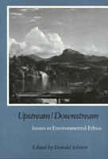

Philosophy applied to environmental issues
Philosophy applied to environmental issues


 Philosophy applied to environmental issues
Philosophy applied to environmental issues

|  |
Upstream/DownstreamIssues in Environmental Ethicsedited by Donald Schererpaper EAN: 978-1-56639-079-8 (ISBN: 1-56639-079-6) |
"This book contains admirable examples of applied philosophy with solid conceptual analysis of critical social and legal issues.... The articles are accessible to an educated layman [and]...suitable for use in upper level undergraduate and graduate courses in environmental philosophy, law, political theory, and —to a lesser degree—economics and history. Select essays can be read profitably by those with interests in environmental policy making, consulting, interpretation, and enforcement."
—Environmental History Review
These original essays explore non-reciprocated relationships with regard to the environment. The contributors—philosophers who are known for their writing on environmental concerns—discuss moral issues that arise when decisions by individuals, corporations, or governments cause changes in the environment that affect those who do not participate in the decisions. Among the topics addressed are population expansion, accumulation of toxic wastes, pollution of air and water, as well as the effects of actions by the "upstream," current generation on "downstream," future generations.
"The essays in Donald Scherer's Upstream/Downstream offer serious readers more to get their teeth into.... [Scherer] deserves congratulation for welding his authors' pieces into a stimulating and satisfying whole...written in accessible, reasonably non-technical language."
—Environmental Values
Acknowledgments
Introduction
1. The Molding of Norms and Environments – Donald Scherer
2. On the Rights of Future Generations – Ernest Partridge
3. Managing the Future: Public Policy, Scientific Uncertainty, and Global Warming – Dale Jamieson
4. Models, Scientific Method, and Environmental Ethics – Kristine Shader-Frechette
5. Can Today�s International System Handle Transboundary Environmental Problems? – Daniel Barstow Magraw and James W. Nickel
6. Takings, Just Compensation, and the Environment – Murk Sagoff
7. The Consequences of My Action, Your Action, and the Company�s Action – Burt Gruzalski
8. Two Types of Cost-Benefit Analysis – Alan Gewirth
About the Contributors
Index
 | Donald Scherer is Professor of Philosophy at Bowling Green State University. |
Contributors: Alan Gewirth, Bart Gruzalski, Dale Jamieson, Daniel Barstow Magraw, James W. Nickel, Ernest Partridge, mark Sagoff, Kristin Shrader-Frechette, and the editor.
Philosophy and Ethics
Nature and the Environment
© 2015 Temple University. All Rights Reserved. This page: http://www.temple.edu/tempress/titles/730_reg.html.